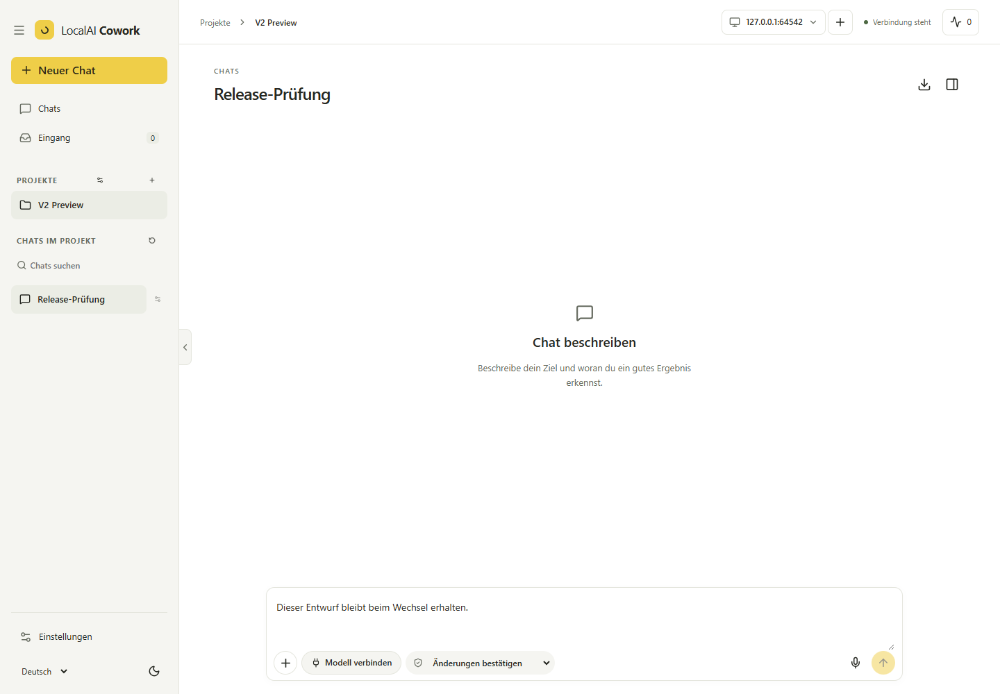

V2 // Releasevorbereitung // 9. November 2026
Eine neue Grundlage.
Ein klarer Preview-Umfang.
Die nächste Version von LocalAI Cowork V2 heißt 2.0.0-alpha.8. Sie wird vorbereitet und ist noch nicht öffentlich verfügbar. Gemeinsamer Rust-Kern und Weboberfläche bilden die Grundlage für den neuen Desktop.
Getrennte Releasekanäle: Die bisherige öffentliche V1-Version ist v0.3.1. Das reservierte V2-Releaseziel v2.0.0-alpha.8 ist erst nach der Veröffentlichung nutzbar. Ein bisheriger V1-Download enthält keine V2-Preview.

Was du mit V2 erproben kannst
- Projekte und Chats mit ausgewähltem Dateikontext, Ollama oder kompatiblen gehosteten Modellen, MCP-Werkzeugen und sichtbaren Planfreigaben.
- Workflows mit typisierten Eingaben, verbundenen Ergebnissen, Bedingungen, Zweigen, relativen Wartezeiten und bearbeitbaren Prüfformularen.
- Geführte Dokumentauswahl und Quellenansicht, bewusst gewählte Dokumentprogramme, deutsche/englische OCR und überprüfbare Extraktionsvorschläge.
- Projektwissen und persönliches Wissen in Themenordnern, Notizen, Importen und Graphen aus Tags und Quellen.
Die Verfügbarkeit hängt von konfigurierten Programmen, Modellzugängen, Ausführungszielen und aktuellen Freigaben ab. Im Quellstand implementierte Funktionen benötigen weiterhin die Abnahme des tatsächlichen Installationspakets.
Geplante Pakete
| System | Paket | Grenze |
|---|---|---|
| Windows x64 | NSIS für den aktuellen Benutzer | Eigene V2-Preview-Kennung und eigener Datenbestand. |
| Linux x86_64 | DEB und AppImage | glibc ab 2.39, GTK 3 und WebKitGTK 4.1; Linux-Anleitung. |
| Weitere Plattformen | Kein Preview-Paket zugesagt | RPM, macOS, ARM64, reines musl-Linux und Android gehören nicht zu dieser Desktop-Preview. |
Experimentell und noch offen
Managed Runtime, registrierte Runner, entfernter Ergebnisabruf und Ergebnisübernahme benötigen weitere Dienstintegration und App-Abnahme. Die vollständige Rechnungs-/OCR-/Buchungskette, absolute Workflowtermine und Ereigniswarten sind noch nicht fertig. Die Windows-Pfadvorprüfung ersetzt keine echte Langpfadunterstützung. Automatische semantische Entitätsextraktion bleibt offen.
Enterprise, Android, Mehrgerätesync, Identitätsanbieter und Container-/Clusterbetrieb haben einen eigenen Einrichtungs- und Abnahmeumfang. Signierung, Updatefeed und Wiederherstellung müssen am genauen Veröffentlichungspaket geprüft sein; ein automatisches V1-auf-V2-Upgrade wird nicht zugesagt.
Mit eigenem Profil beginnen
- V1 und eine Sicherung seiner Daten behalten.
- Nach Veröffentlichung das passende Paket ausdrücklich aus dem V2-Preview-Release wählen und Prüfsummen sowie Release Notes prüfen.
- Ein separates V2-Profil und Kopien unkritischer Arbeitsdateien verwenden. V2 niemals auf eine V1-Datenbank zeigen lassen.
- Den lokalen Dienst oder einen kompatiblen selbst betriebenen V2-Server bewusst wählen und ein Modell einrichten.
- Einen kleinen Auftrag samt Planfreigabe, Dateiresultat und Neustart prüfen.
Historienimport und ausdrückliche Inhaltsübernahme sind getrennte geprüfte Schritte. Alte Läufe, Schlüssel, Freigaben, Zeitpläne und Ausgangsoperationen werden dadurch nicht wieder ausführbar. Für die Rückkehr bleibt die vorhandene V1-App mit ihrem eigenen Profil erhalten; V2-Daten werden nicht in eine V1-Datenbank zurückgestuft.
Vor der Veröffentlichung
Benötigt werden ein nachvollziehbarer Quellstand, bestandene Releaseprüfungen, frische Paketbelege, Prüfsummen, Softwarestückliste, der genaue Signier-/Updatestatus sowie Installations- und Wiederherstellungsnachweise. Frühere Quelltests ersetzen diese Paketabnahme nicht.